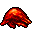

ジェリー Jelly
英語版 CrawlWiki の記事「Jelly」(0.30 向け、2023-09-19 版)の翻訳です。原文の著者は編集履歴をご覧ください。
この記事は 0.30 の時点の内容で、最新の 0.34 とは違うところがあるかもしれません。
ジェリーの仲間をすべて見るにはジェリーの一覧を参照。
| ジェリー J  | |
|---|---|
| HP | 10-22 |
| HD | 3 |
| XP | 42 |
| 速度 | 10 |
| AC | 0 |
| EV | 2 |
| 意志力 | 10 |
| 攻撃1 | 3(打撃: 酸)
|
| 耐性 | rPois+ rAcid+++ rDrown |
| 弱点 | なし |
| 生息地 | 水陸両生 |
| 知能 | 無知性 |
| 使用 | 何も使わない |
| 分類 | 生物 |
| 体格 | 小さい |
| 種類 | ジェリー、ジェリー |
| フラグ | 扉を食べる 霊視 盲目化無効 分裂する 不定形 酸性の肉体 骨格なし |

| 脈動する酸性の原形質の塊だ。
(歌詞の引用のため本文は省略) |
基本情報
ジェリーは酸のダメージを与える、そこそこ弱い生き物だ。物理的なダメージはたいしたことがないが、攻撃が当たるたびに 4d3 の「酸のしぶき」のダメージが追加されうる。近接攻撃でジェリーを殴っても酸のしぶきを浴びる。酸を浴びると、今度は腐食を受ける。腐食は重ねがけされる弱体化で、AC と殺戮を下げる。迷宮の浅い階から中ほどの階と、ジェリーをテーマにした一部のヴォールトで見かける。
ジーヴァの信者はジェリーにいらいらさせられることになる。ジーヴァはジェリーをひっきりなしに湧かせ、ジェリーは迷宮の床に落ちているアイテムを食べてしまう。アーティファクトと道具類の発動アイテム以外は何でも平らげる。
小技
- 与えるダメージは見かけによらない。酸の攻撃はどれも、プレイヤーに対しては 4d3 のダメージが追加される。できることなら、酸を避けるためにジェリーとは離れて戦おう。
- 腐食阻止の指輪などで rCorr を得ておけば、腐食する確率も受けるダメージも大きく減る。